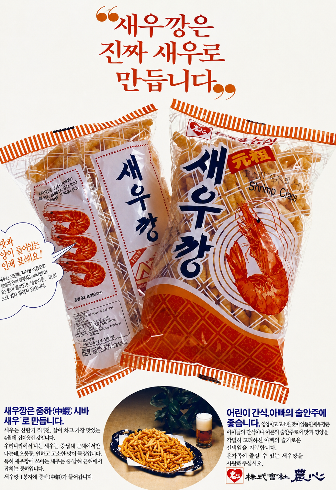

새우깡이 처음 출시된 해로, 붉은 새우 그림과 제품명을 중심으로 한 단순한 패키지 디자인이 특징이다. 당시 인쇄 기술 수준에 맞춰 제작되었으며 새우의 형태를 그림으로 표현해 제품의 정체성을 전달했다.

1971
탄생 , 최초 디자인
launch

launch
새우깡이 처음 출시된 해로, 붉은 새우 그림과 제품명을 중심으로 한 단순한 패키지 디자인이 특징이다. 당시 인쇄 기술 수준에 맞춰 제작되었으며 새우의 형태를 그림으로 표현해 제품의 정체성을 전달했다.